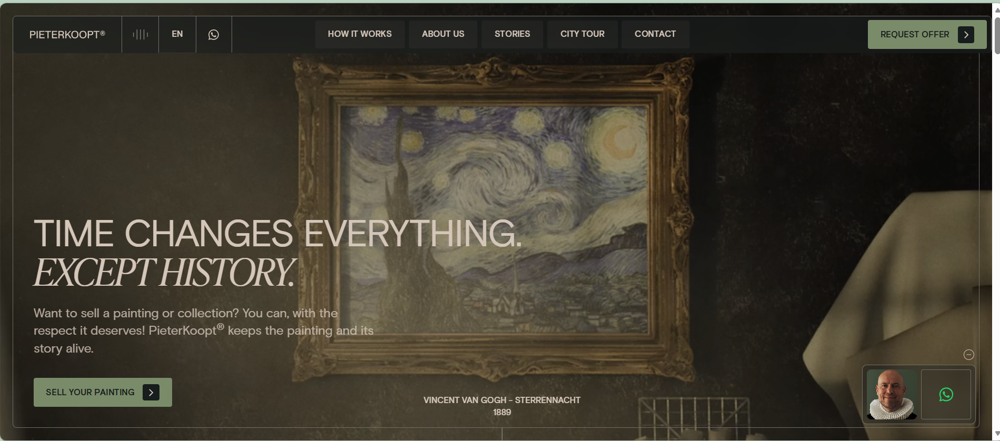

The chosen website was an art selling website. It was very obvious what the website was for and the organizaion and layout was beautiful.
Not only was the website intended to sell art but it was also done in a very artistic way. The colors chosen, the layout, and the movements from top to bottom of the page were all beautiful.